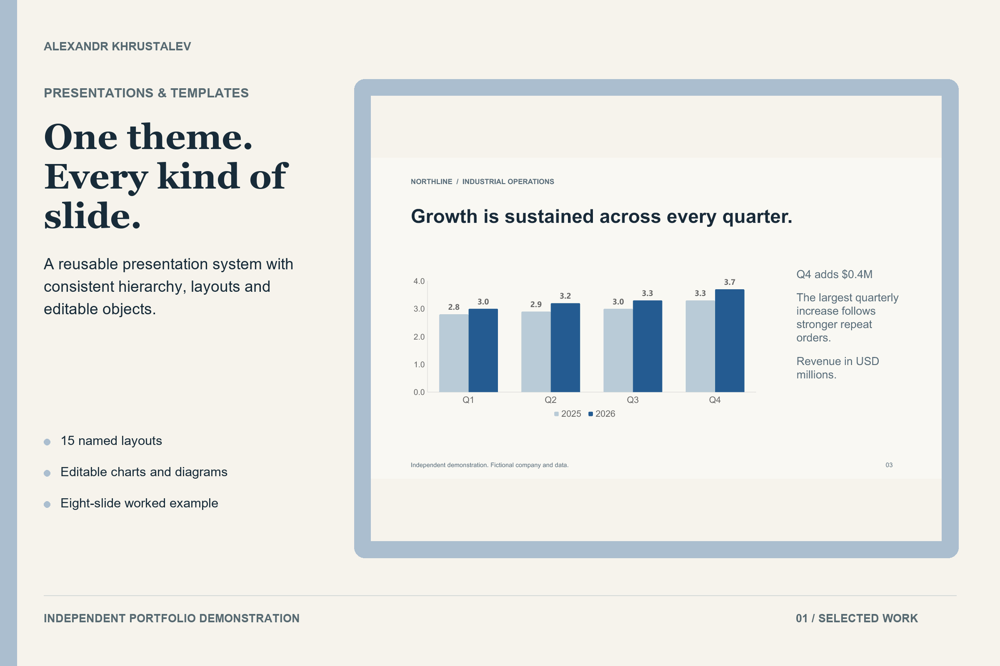

Independent project
Reusable 15-layout presentation system
A reusable presentation system with 15 layouts, an eight-slide executive review, editable charts, tables and connected diagrams. Independent work with fictional business figures.